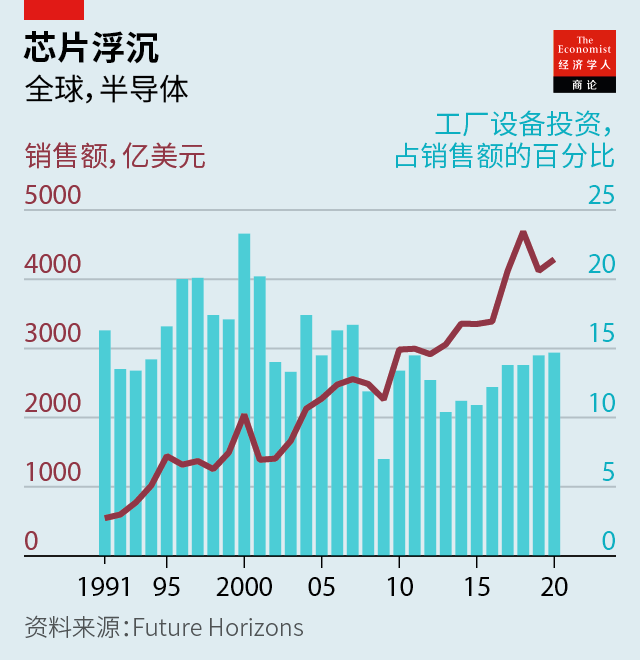

2021-06-02T15:15:13+00:00
加载中，请稍等
全球芯片短缺将持续一段时间
早在疫情之前，微芯片就是个盛衰交替的周期性行业

芯片不够了，工厂一筹莫展。5月18日，在全球微芯片短缺之际，丰田成为最新一家被迫减产的汽车制造商，宣布将让日本的两家工厂停工。福特、通用汽车和捷豹路虎等公司此前也已不得不先让工人回家。
头痛的不止汽车产业，因为这次短缺涉及各类芯片，从驱动智能手机和数据中心的昂贵高科技设备，到已成为重要日常用品的简单传感器和微控制器。后者广泛应用于汽车和洗衣机等各种产品，单个成本往往仅需几美分。过去几周，包括富士康、任天堂和三星在内的公司都发出了生产受到冲击的警告，从智能手机、游戏机，到电视和家庭宽带路由器的各种商品都会受影响。
各国政府感到担忧。美国在4月召开了一场峰会，5月20日又举行了一场。德国财政部长已向众多芯片制造商所在的台湾地区的政府致函，游说其优先为汽车制造商供应芯片。咨询公司龙洲经讯（Gavekal Research）在5月4日发布的一份报告称，芯片短缺可能很快会影响几个东亚经济体的出口表现。但部长们对此也束手无策。这次芯片短缺是新冠疫情和一个以兴衰周期闻名的行业相互作用的结果。它很可能会持续数月，甚至数年。
芯片业咨询公司Future Horizons的老板马尔科姆·佩恩（Malcolm Penn）说，“[需要认识到的]最重要的一点是，短缺是这个行业的一个自然组成部分。”他说，芯片制造是经济学家称之为“猪周期”生意的一个很好的例子。上世纪20年代，经济学家首度分析了美国猪肉市场供应不足与供应过剩之间的规律性波动，这个名词由此而来。和猪肉的供应一样，芯片供应无法对需求的变化迅速作出反应。佩恩说，即使在疫情之前，产能也很紧张。他指出，芯片制造商对工厂设备的投资多年来一直低于其长期平均水平（见图表）。
这么说来，疫情发生的时间不能更糟了。另一家咨询公司高德纳（Gartner）的艾伦·普里斯特利（Alan Priestley）表示，在经历了一开始的崩盘后，有几个领域需求激增。被疫情封锁在家的消费者纷纷购置笔记本电脑和其他电子小设备。作为高端芯片的消费大户，云计算运营商忙不迭地添置服务器以应对居家工作者激增。汽车行业在疫情初期决定削减芯片订单，这让它受到的冲击尤其严重。自那以后对汽车的需求已经逐渐恢复，但生产过程的复杂性意味着将一张空白硅片变为一组可用的芯片需要三到四个月的时间。“我取消订单只需一个下午，”佩恩说，“如果我想恢复它们，得花几个月——再说了，这些产能这会儿正忙着服务其他客户呢。”
疫情的影响反过来又因为行业特有的一些问题而加剧。3月，日本公司瑞萨科技（Renesas）旗下的一家芯片厂失火，令汽车行业雪上加霜。与此同时，一些芯片制造商自身也面临短缺问题。许多廉价的普通零部件都产自老式工厂，当初建这些工厂就是为了加工直径200毫米或以下的硅片。（现在的标准是300毫米。）普里斯特利说，现在还在生产这类老式机器的工具制造商已经寥寥无几，所以芯片工厂也没办法提高产能。同时，二手市场上生产200毫米硅片的机器早已断货。
但猪周期正再度转向。全世界最大的芯片代工厂台积电仅今年就计划在新产能上投入300亿美元。另外两家巨头三星电子和英特尔分别计划投入280亿美元和200亿美元。二线芯片制造商也在加大投入力度。普里斯特利说，这将为更广泛的经济缓解压力，但不会立竿见影。5月14日，计算机制造商IBM的老板吉姆·怀特赫斯特（Jim Whitehurst）说他认为短缺可能会持续两年。而且，佩恩表示，等到短缺最终结束时，芯片制造商可能会发现自己面对一个熟悉的问题，只不过规模会更大：今天为严重短缺而大幅增加产能，很可能会导致明天严重过剩。
2021-06-02T15:15:13+00:00
Loading, please wait
The global chip shortage is here for some time
Microchips were a boom-and-bust industry even before covid-19
FOR WANT of a chip, the factory was lost. On May 18th Toyota became the latest carmaker forced to cut production amid a global shortage of microchips, announcing it would suspend work at two of its plants in Japan. Firms including Ford, General Motors and Jaguar Land Rover have also had to send workers home.
The pain is not confined to the car industry, for the shortage spans all sorts of chips, from the expensive, high-tech devices that power smartphones and data centres to the simple sensors and microcontrollers that have become a vital commodity, scattered across everything from cars to washing machines, and often costing just a few cents each. In the past few weeks companies including Foxconn, Nintendo and Samsung have warned of hits to production, affecting everything from smartphones and games consoles to televisions and home broadband routers.
Governments are worried. America’s called a summit in April; another is due on May 20th. Germany’s finance minister has written to the government of Taiwan, where many chipmakers are based, lobbying for priority for carmakers. A report from Gavekal Research, a consultancy, published on May 4th, said the shortage might soon hit export performance in several East Asian economies. But there is little that ministers can do. The chip drought is the result of the covid-19 pandemic interacting with an industry that is notoriously prone to cycles of boom and bust. It is likely to persist for months, if not years.
“The most important thing [to recognise]”, says Malcolm Penn, who runs Future Horizons, a chip-industry consultancy, “is that shortages are a natural part of the industry.” Chipmaking, he says, is a good example of what economists call a “pork-cycle” business, named for the regular swings between under- and over-supply first analysed in American pork markets in the 1920s. As with pigs, the supply of chips cannot quickly react to changes in demand. Capacity was tight even before the pandemic, says Mr Penn, pointing out that investment by chipmakers in factory equipment has been below its long-term average for many years (see chart).
The pandemic thus arrived at the worst possible time. After an early crash, demand in several segments boomed, says Alan Priestley of Gartner, another consultancy. Locked-down consumers bought laptops and other gadgets. Cloud-computing operators, which are big consumers of high-end chips, scrambled to add servers to deal with the wave of home-workers. The car industry was particularly badly hit by a decision to cut orders early in the pandemic. Demand for cars has since recovered. But the complexities of the production process means it takes three to four months to turn a blank silicon wafer into a usable batch of chips. “I can cancel my orders in an afternoon,” says Mr Penn. “If I want to start them up again, that takes months—and anyway, that capacity is now busy serving other customers.”
The impact of the pandemic, in turn, has been made worse by industry-specific problems. In March a chip plant owned by Renesas, a Japanese firm, caught fire, piling pain on the car industry. Some chipmakers, meanwhile, face shortages of their own. Many cheap, workaday parts are made in older factories designed to process silicon wafers that are 200mm in diameter, or even smaller. (These days 300mm is the standard.) Efforts to boost capacity are stymied by the fact that few toolmakers still make the old-style machines, says Mr Priestley. The market for second-hand 200mm tools, meanwhile, has been stripped bare.
But the pork cycle is turning once again. Taiwan Semiconductor Manufacturing Company, the world’s biggest contract chipmaker, plans to spend $30bn on new capacity this year alone. Samsung Electronics and Intel, two other giants, have pencilled in $28bn and $20bn respectively; second-tier chipmakers are ramping up spending too. That will bring relief to the wider economy, says Mr Priestley, but not immediately. On May 14th Jim Whitehurst, the boss of IBM, a computer-maker, said he thought the shortages might last for two years. And, says Mr Penn, when the drought eventually ends, chipmakers may find they face a familiar problem, but on a bigger scale: a capacity splurge in response to serious shortages today could well mean a sizeable glut tomorrow. ■
2021-06-02T15:15:13+00:00
加載中，請稍等
全球芯片短缺將持續一段時間
早在疫情之前，微芯片就是個盛衰交替的周期性行業
芯片不夠了，工廠一籌莫展。5月18日，在全球微芯片短缺之際，豐田成為最新一家被迫減產的汽車製造商，宣布將讓日本的兩家工廠停工。福特、通用汽車和捷豹路虎等公司此前也已不得不先讓工人回家。
頭痛的不止汽車產業，因為這次短缺涉及各類芯片，從驅動智能手機和數據中心的昂貴高科技設備，到已成為重要日常用品的簡單傳感器和微控制器。後者廣泛應用於汽車和洗衣機等各種產品，單個成本往往僅需幾美分。過去幾周，包括富士康、任天堂和三星在內的公司都發出了生產受到衝擊的警告，從智能手機、遊戲機，到電視和家庭寬帶路由器的各種商品都會受影響。
各國政府感到擔憂。美國在4月召開了一場峰會，5月20日又舉行了一場。德國財政部長已向眾多芯片製造商所在的台灣地區的政府致函，遊說其優先為汽車製造商供應芯片。諮詢公司龍洲經訊（Gavekal Research）在5月4日發布的一份報告稱，芯片短缺可能很快會影響幾個東亞經濟體的出口表現。但部長們對此也束手無策。這次芯片短缺是新冠疫情和一個以興衰周期聞名的行業相互作用的結果。它很可能會持續數月，甚至數年。
芯片業諮詢公司Future Horizons的老闆馬爾科姆·佩恩（Malcolm Penn）說，“[需要認識到的]最重要的一點是，短缺是這個行業的一個自然組成部分。”他說，芯片製造是經濟學家稱之為“豬周期”生意的一個很好的例子。上世紀20年代，經濟學家首度分析了美國豬肉市場供應不足與供應過剩之間的規律性波動，這個名詞由此而來。和豬肉的供應一樣，芯片供應無法對需求的變化迅速作出反應。佩恩說，即使在疫情之前，產能也很緊張。他指出，芯片製造商對工廠設備的投資多年來一直低於其長期平均水平（見圖表）。
這麼說來，疫情發生的時間不能更糟了。另一家諮詢公司高德納（Gartner）的艾倫·普里斯特利（Alan Priestley）表示，在經歷了一開始的崩盤後，有幾個領域需求激增。被疫情封鎖在家的消費者紛紛購置筆記本電腦和其他電子小設備。作為高端芯片的消費大戶，雲計算運營商忙不迭地添置服務器以應對居家工作者激增。汽車行業在疫情初期決定削減芯片訂單，這讓它受到的衝擊尤其嚴重。自那以後對汽車的需求已經逐漸恢復，但生產過程的複雜性意味着將一張空白硅片變為一組可用的芯片需要三到四個月的時間。“我取消訂單只需一個下午，”佩恩說，“如果我想恢復它們，得花幾個月——再說了，這些產能這會兒正忙着服務其他客戶呢。”
疫情的影響反過來又因為行業特有的一些問題而加劇。3月，日本公司瑞薩科技（Renesas）旗下的一家芯片廠失火，令汽車行業雪上加霜。與此同時，一些芯片製造商自身也面臨短缺問題。許多廉價的普通零部件都產自老式工廠，當初建這些工廠就是為了加工直徑200毫米或以下的硅片。（現在的標準是300毫米。）普里斯特利說，現在還在生產這類老式機器的工具製造商已經寥寥無幾，所以芯片工廠也沒辦法提高產能。同時，二手市場上生產200毫米硅片的機器早已斷貨。
但豬周期正再度轉向。全世界最大的芯片代工廠台積電僅今年就計劃在新產能上投入300億美元。另外兩家巨頭三星電子和英特爾分別計劃投入280億美元和200億美元。二線芯片製造商也在加大投入力度。普里斯特利說，這將為更廣泛的經濟緩解壓力，但不會立竿見影。5月14日，計算機製造商IBM的老闆吉姆·懷特赫斯特（Jim Whitehurst）說他認為短缺可能會持續兩年。而且，佩恩表示，等到短缺最終結束時，芯片製造商可能會發現自己面對一個熟悉的問題，只不過規模會更大：今天為嚴重短缺而大幅增加產能，很可能會導致明天嚴重過剩。